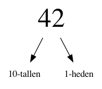
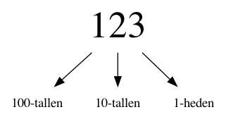

Binaire getallen#
Als we een computer willen gaan programmeren, dan is enige kennis van zijn werking wel belangrijk. Dit vakgebeid staat bekend als computer architectuur.
Machinetaal#
Een computer spreekt machinetaal en deze taal bestaat enkel uit 0-en en 1-en. Ooit gehoord van bits en bytes? Een bit is een 0 of een 1. Een byte is een groep van 8 bits. Alle data en instructies binnen een computer wordt gepresenteerd door deze bits. We gaan nu eerst kijken hoe een computer getallen opslaat en optelt bij elkaar. In de toekomst gaan komen ook letters, teksten, plaatjes en geluid langs.
Het getal 42#

Het boek The Hitchhiker’s Guide to the Galaxy van Douglas Adams heeft sporen nagelaten in onder andere informatica: de kans is groot dat je in voorbeelden of uitwerkingen het getal 42 tegenkomt. Maar ook in het gewone leven als je op 25 mei mensen met een handdoek ziet lopen …
Tientallig stelsel (decimaal)#
Grondtal 10


Tweetallig stelsel (binair)#

Grondtal 2
Elke kolom naar links is de volgende macht van het grondtal (dus steeds keer het grondtal)

Decimaal#
Binair#

Quiz#
Converteer het binaire getal 110011 naar decimaal
Converteer het binaire getal 10001000 naar decimaal
Converteer het decimale getal 28 naar binair
Converteer het decimale getal 101 naar binair
Rekenen met talstelsels#
Hoe werkt rekenen eigenlijk?
We bekijken alleen optellen
Tientallig rekenen#

We gebruiken opzoektabellen om de berekeningen voor 1 cijfer te kunnen doen, en algoritmes voor langere getallen
Optellen#
Welk algoritme gebruiken we voor optellen?
Tweetallig rekenen#
+ |
0 |
1 |
|---|---|---|
0 |
||
1 |
Dezelfde aanpak, allen zijn de tabellen wat kleiner! 🥳
Welke getallen komen in de tabel te staan?
Tweetallig rekenen#
+ |
0 |
1 |
|---|---|---|
0 |
0 |
1 |
1 |
1 |
10 |
Die 10 is binair, lees dus 2 decimaal!
Quiz#
Tel de binaire getallen 101101 en 1110 op zonder ze om te rekenen naar decimaal
Verder dan binair!#
Grondtal |
Stelsel |
42 |
Cijfers |
|---|---|---|---|
2 |
Binair |
101010 |
0, 1 |
3 |
Ternair |
1120 |
0, 1, 2 |
3 |
Octaal |
52 |
0, 1, 2, 3, 4, 5, 6, 7 |
10 |
Decimaal |
42 |
0, 1, 2, 3, 4, 5, 6, 7, 8, 9 |
16 |
Hexadecimaal |
2A |
0, 1, 2, 3, 4, 5, 6, 7, 8, 9, A, B, C, D, E, F |